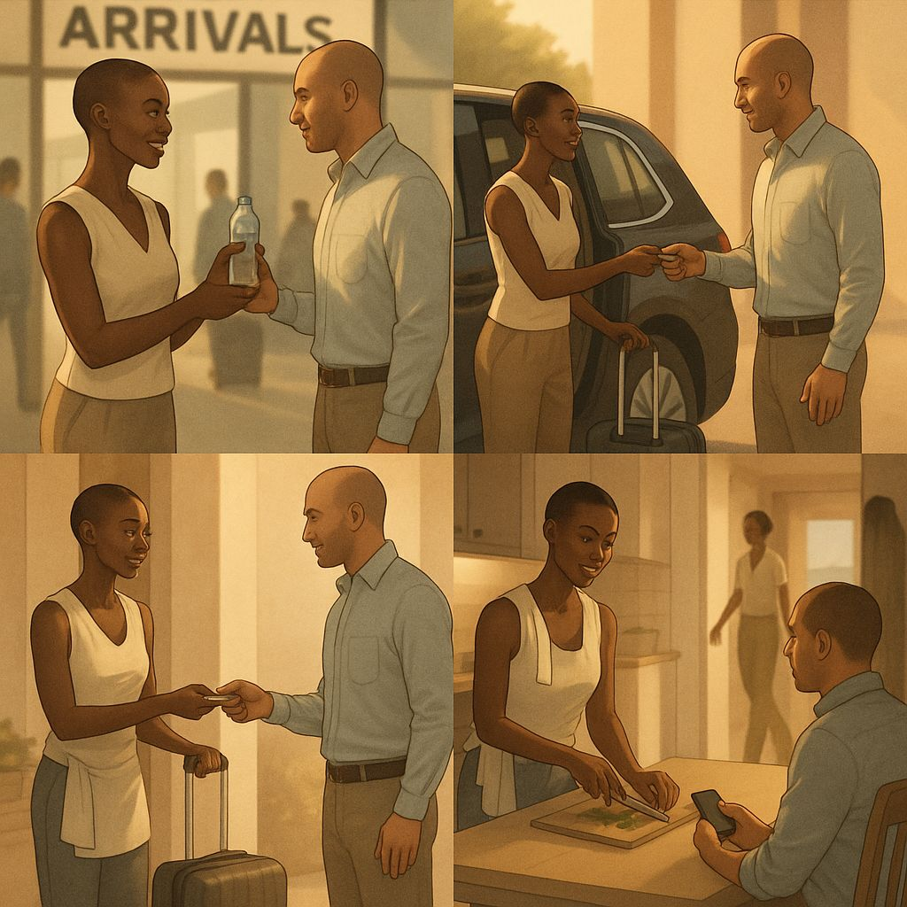

Independent hosts and selected partners. One assignment at a time.
KIMANZI is for the people on the ground. We coordinate UrbanChill assignments in Nairobi — airport pickups, first-week orientation, and ongoing local support for professionals relocating to the city.
For hosts in Nairobi, this is meant as an additional channel — clear scope, fixed fee, paid quickly. No employment, no exclusivity, no minimum availability.
For partners — operators in Kenya or organisations sending people from the Netherlands — we coordinate UrbanChill assignments end-to-end with a single contact and an in-person selection process.
This page is for hosts and partners. If you're a guest looking to book services, visit urbanchill.nl.

Practical, time-boxed, in-person work
Most KIMANZI assignments are a single day, or a week of light coordination. The work is concrete: meet someone at JKIA, hand them their keys, take them to the supermarket, walk them through Westlands, drive them to KRA. No mystery, no atmosphere talk.
Arrival days most common
Pickup at the airport, transfer to the apartment or hotel, SIM card, first cash run, supermarket and a calm orientation walk through the neighborhood. Six to ten hours of focused presence on the day.
Extra days
Booked alongside an Arrival when the guest needs more practical time on the ground: housing visits, paperwork at KRA or immigration, a school visit, a bank appointment. The host sets the order and pace.
Concierge follow-up
For guests on a monthly retainer after their first week. Mostly remote — WhatsApp questions, vendor recommendations, occasional small tasks. Response within a working day, not on-call.
Special requests
Occasionally a guest asks for something custom — a multi-day trip out of Nairobi, an introduction to a specific community, deeper logistical support. We scope these per request and discuss with the host before confirming.
What our guests are dealing with
The guests UrbanChill sends have flown a long way and usually land tired. Some arrive in the morning, exhausted before the day starts. Many arrive late at night — and in most major cities, including Nairobi, walking out alone after dark is not something a newcomer wants to figure out on their first evening.
They're not on holiday. Nairobi is a working base for them — one hour offset from Western European business hours, no jet-lag week to lose, real meetings starting soon. Whether you're meeting them at the airport, hosting them in your apartment, or feeding them on their second night, the same context applies: their first days here are not a vacation. They land already needing things to work.
Clear, fixed, and paid within two days
Compensation details are shared personally during your introduction with Stephen — and available in full via your host portal after onboarding.
Two short sequences, both clear
No surprises in either direction. Joining KIMANZI as a host is its own short path; what happens when an assignment comes in is a separate one. Here is each, step by step.
From submitted interest to first assignment
- Submit interest Use the form on this page. We respond within one working day.
- First conversation If your profile fits, we set up a private call. We talk through how you work, what you're looking for, and what we'd realistically send your way.
- Independent status confirmed If you're still formalising your KRA registration, we wait until that's clear before assignments start. We can advise on the process if helpful.
- Optional shadow day If you'd like to see a real assignment before going solo, we arrange a paid shadow day with an experienced host. Only when both sides agree it makes sense.
- Added to the rotation Your name and area enter our coordination system. From here, we contact you when there is a matching assignment — never before, never on a schedule.
From booking to invoice paid
- We message you with the scope Guest profile, dates, flight info, accommodation address, anything specific to the arrival. Usually a few days ahead, sometimes longer.
- You accept or decline No explanation needed. Declining one assignment has no effect on whether we offer the next.
- Briefing arrives Full details: my direct phone number, the guest's WhatsApp, vendor contacts you may need, and any practical notes.
- You do the work Your route, your timing, your judgement. KIMANZI is reachable for the questions only we can answer.
- You invoice us Right after completion: a photo of each receipt and your invoice, emailed to host@kimanzi.nl. No special form needed.
- Paid within 2 days Your fee was already on our account before you started — we only put assignments in the pipeline after the guest has paid us. Once admin clears, payout runs via tech-banking: minutes, not days. M-Pesa standard; another method on request. Concierge commissions run monthly for as long as the guest stays subscribed.
Judgment, calm, reliability
Most of our hosts come from hospitality, transport, expat support or NGO logistics backgrounds. Years of experience matter less than how you handle a guest who's tired, jet-lagged and a bit lost.
If any of the following describes you, the application form below is the right place to start:
- You live in or know Nairobi well — its neighborhoods, its traffic, its paperwork rhythm.
- You already operate as an independent in Kenya, or you're in the process of formalising (KRA PIN, registration in progress).
- You handle calmly: a guest's first morning is your steadiest hour, not your most rushed.
- You can be reached on WhatsApp during accepted assignments and respond within reasonable time.
- You understand that we send work occasionally, not constantly, and that's the model.
Two kinds of partnership, one inbox
KIMANZI works with selected partners on both ends of the route — operators in Nairobi who help us deliver consistent quality, and organisations in the Netherlands whose people land here. Different conversations, same standards.
Service partners on the ground
Hotels, serviced apartments, transport companies, document agents, language tutors, gyms, coworking spaces, household services. We're interested in operators who pick up the phone, deliver what they promise, and treat our guests fairly.
- Reliable communication and fair pricing
- Strong local awareness — safety, timing, accessibility
- Comfortable working with international clients
- Clear about what you do and what you don't
Partner selection happens in person — we visit, we have a conversation, we see how the operation runs.
HR, relocation, NGO and academic partners
Companies, NGOs, research institutes and relocation specialists in the Netherlands whose staff land in Nairobi for assignments — short or long. KIMANZI is the operational layer behind UrbanChill: a single Dutch contact, fixed prices, an invoice in EUR, and reliable people on the ground.
- One contract, recurring use across multiple staff members
- Predictable scope and pricing — KIMANZI handles the on-the-ground coordination so your staff can focus on why they're here
- Discreet handling of arrivals, family logistics, briefings
- Volume-based arrangements for organisations with regular Nairobi rotation
Both kinds of partnership go through the same contact form. Mention which side you're on in the topic field and we route it.

Why I started this
Travelling showed me that the first hours in a new place can feel heavy: confusion, hunger, noise, fatigue. Too much at once.
You walk into your apartment after a long flight. There's coffee, there's water — but no bread, no yoghurt, nothing for a simple breakfast. So instead of resting, you go out again. Past unfamiliar streets, into a supermarket where the brands are different and the queue takes longer than expected.
Or you've arrived at eleven at night. The last thing you want to think about is whether anything is still open, where a safe route runs at this hour, or what tomorrow morning will need from you before it has even started.
You wanted to land. You're still landing.
These are small things. Not catastrophes. But it's the small things that decide whether someone starts their first week feeling competent, or starts it tired and behind.
UrbanChill exists to take those small things off your plate. KIMANZI exists to do that with the right people on the ground — independent professionals in Nairobi who know which shops open early, which neighbourhood grocery stocks the brand you'd want, and how to make the first morning feel like part of arriving rather than another errand to run.
I'm building this slowly because the people I work with are the operation. I'd rather decline a partnership than dilute the standard. And I'd rather have one careful conversation than a rushed signup — so if you're considering applying as a host, partnering with us in Kenya, or setting up an arrangement from the Netherlands, send a message and we'll talk.
— Stephen L.Founder, UrbanChill & KIMANZI
For independent hosts in Nairobi
Selection is based on fit with current scope and existing host coverage. If your profile aligns, we contact you privately to talk further. We respond within one working day.
Partners and general enquiries
For partners (Kenya or Netherlands), venues, logistics providers, and anything that isn't a host application. We confirm receipt and respond within one working day.
Frequent questions from hosts and partners
For hosts
Is this employment?
No. You operate as an independent professional. You invoice KIMANZI per assignment and you decide what other work you take on. There is no exclusivity, no minimum availability and no schedule commitment.
How is payment handled?
Right after each completed assignment, send your invoice and a photo of each receipt to host@kimanzi.nl. No special form, no template — just photo and email. Once everything arrives and we confirm completion, payout goes out within 2 working days.
The fast turnaround is structural, not a service promise: assignments only enter the pipeline after the guest has paid KIMANZI in full, so your fee is already on our account before your day begins. There is no platform float and no waiting for the guest to pay through. Once admin clears, payout runs via tech-banking — minutes to your account, not legacy banking queues.
M-Pesa is the standard channel. If you'd rather be paid by SEPA, bank transfer, or another method, just say so on the invoice — we accommodate.
For Concierge, the €23 commission is paid monthly for as long as the guest's subscription stays active.
Do I need to front any costs?
No. Airport transfer is arranged and prepaid by KIMANZI. Fuel and lunch you advance on the day and declare on your invoice — reimbursed in full.
Can I decline an assignment?
Yes, every time, without explanation. Declining one assignment has no effect on whether we offer you the next.
Do I have to be available on a schedule?
No. The "typical week pattern" question on the form helps us know roughly when not to call. You're free to be unavailable for weeks at a time, or to take a long break and pick up later.
What if a guest behaves out of scope during an assignment?
You stop, you call me — my number is in your assignment briefing — you go home. You are paid in full for the time you committed. KIMANZI handles the conversation with the guest from there. This isn't a guideline — it's the rule.
Do I need a social media presence?
No. We don't require it and we don't promote individual hosts publicly. The guest gets your name and a short professional background in their prep email — that's where it stays.
What does "independent in Kenya" mean for the form?
You're registered with KRA, file your own returns, and invoice clients directly. If you're formalising (PIN obtained, registration in progress), that's fine — mark "in process". We can talk through what's needed if you select the third option.
How do I reach KIMANZI during an assignment?
Your assignment briefing includes a direct phone number for me — day or evening, weekday or weekend, for anything urgent on the day. Call, don't wait. The number isn't published on this site to keep the line clear for hosts who are actually working on an assignment.
For applications and general questions outside an accepted assignment, the contact form on this page reaches me faster.
How often will I get assignments?
Honest answer: we don't promise a volume. Some months are quiet, some are busy. KIMANZI is meant to be an additional channel, not a primary income source. Hosts who like the model treat it as one of several streams.
For partners
What kind of Kenya-side partners do you work with?
Operators in Nairobi whose work intersects with first-week settling: accommodation, transport, paperwork support, language tutoring, lifestyle services. We're not building an open marketplace — partners are added slowly and only when there's mutual fit.
What kind of Netherlands-side partners do you work with?
Companies, NGOs, research institutes and relocation specialists in the Netherlands whose staff land in Nairobi. Typical setups range from one-off booking arrangements to volume-based contracts for organisations with regular Nairobi rotation.
We can invoice in EUR, work with NL contracting standards, and act as your single Dutch contact for the operational side in Nairobi.
How does referral work?
Either side can refer. If KIMANZI refers a guest to a partner service and the partner has a referral structure, that's arranged bilaterally. We don't add markup on partner services to the guest.
Do you cover cities outside Nairobi?
No. KIMANZI operates within Nairobi only. We can advise on logistics in other Kenyan cities through our partner network, but assignments and host coordination stay city-bounded.